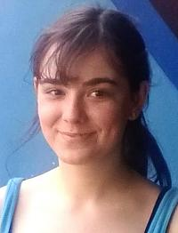

I am a lecturer in eHealth at Kent, and a senior research associate at the University of Cambridge. I received my PhD from the University of Kent, specialising in computational and cognitive neuroscience.
Postdoctoral Research Associates
Corinne Bareham is a post-doctoral scientist working on the BETADOC project, where we are trialling bedside EEG assessments of awareness in vegetative and minimally conscious patients.
Marco Javarone is a postdoctoral research associate working on the MOHAWK project. He is working on network models of brain connectivity.
PhD Students

Iulia Comsa did her PhD with me on computational methods for studying altered states of consciousness, co-supervised by Tristan Bekinschtein at Cambridge. She is currently working on Machine Learning at Google Research Zurich.
Kostas is doing his PhD at the intersection of deep learning and cognitive neuroscience.
Riku is doing his PhD in computational modelling of brain connectivity in altered states of consciousness.